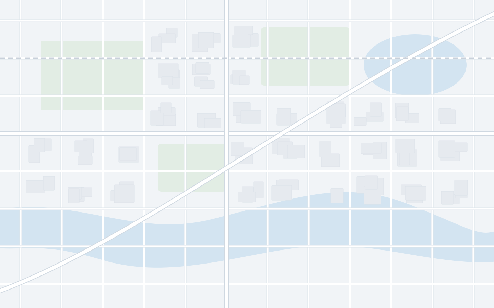

로딩 · 스켈레톤 (구조 유지)
시머: skel → card 가로 그라데이션 1.2s 반복 · 동작 줄이기 시 정지
오류 배너 · 콘텐츠 유지
이동시간을 불러오지 못했어요. 마지막 계산값을 표시합니다.
다시 시도
1 · 슨푸성 공원
09:30 – 10:40 · 1시간 10분
도보 14분 · 재계산 필요
오프라인 · 추정 모드 강등

오프라인 · 저장된 일정 표시 중
도보 14분
추정
대중교통 23분
추정
AI 최적화 · 온라인 필요
빈 상태
아직 여행이 없어요
지역과 날짜만 정하면
바로 일정을 만들 수 있어요
첫 여행 만들기
Day 3 · 9월 21일 (일)
이 날은 아직 비어 있어요
지도에서 장소를 검색해 추가하거나
다른 날의 장소를 끌어오세요
cloud (기본)
spring
summer
autumn
winter
korea
china
japan